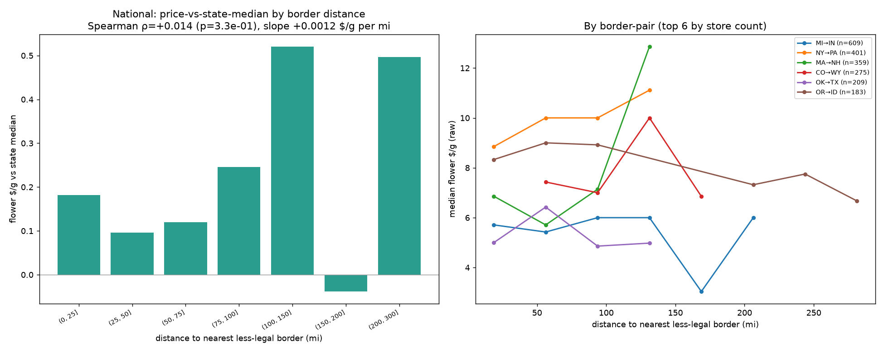
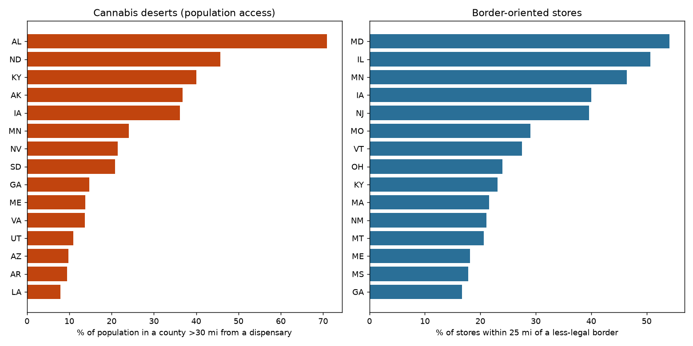
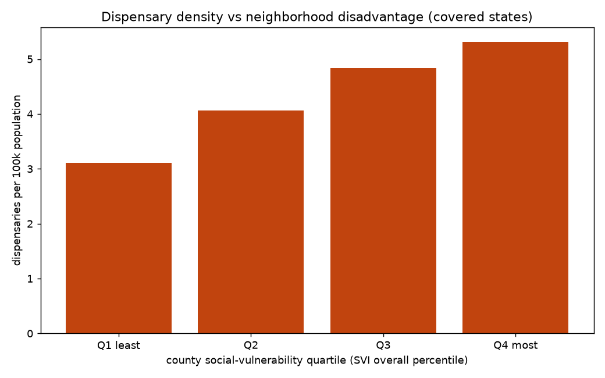
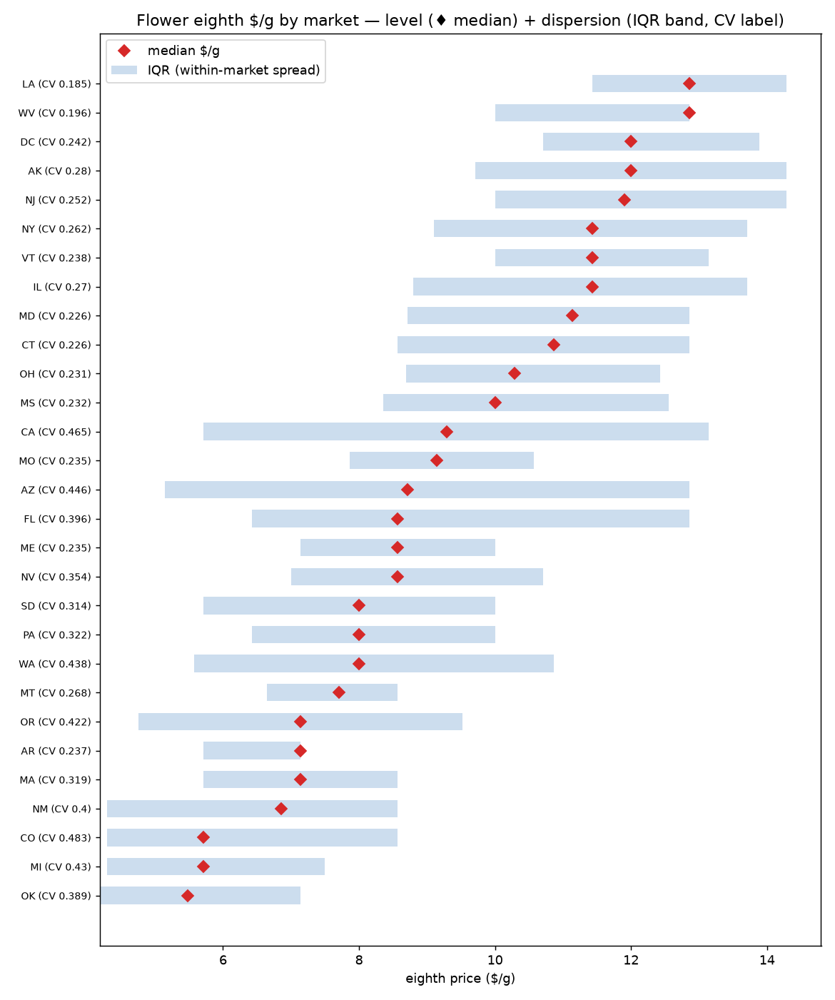
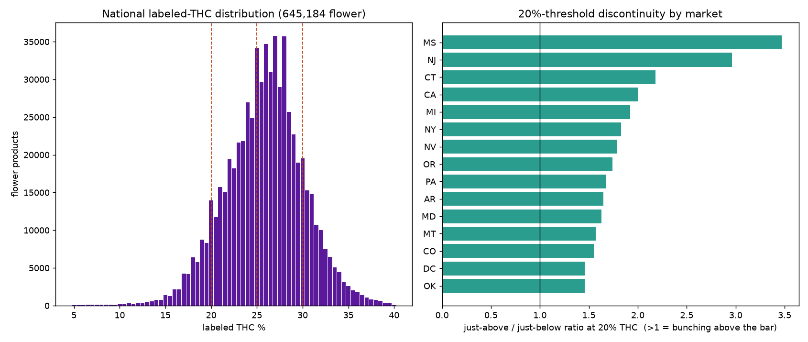
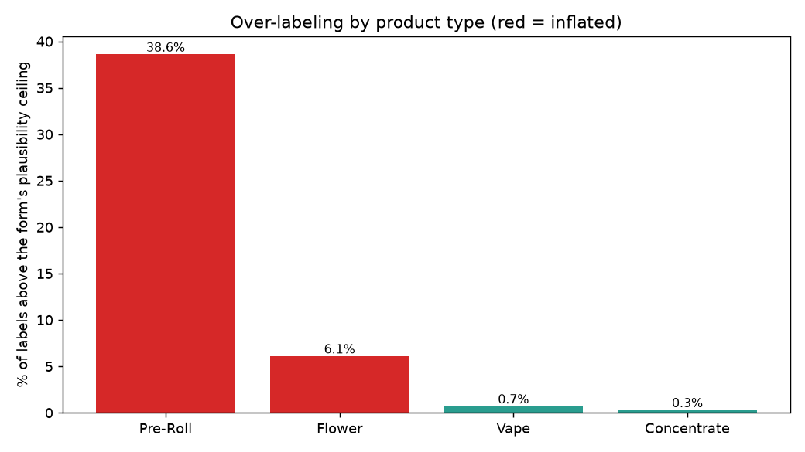
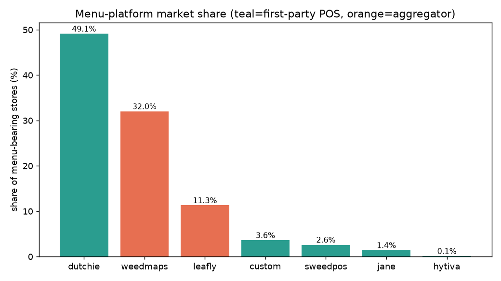
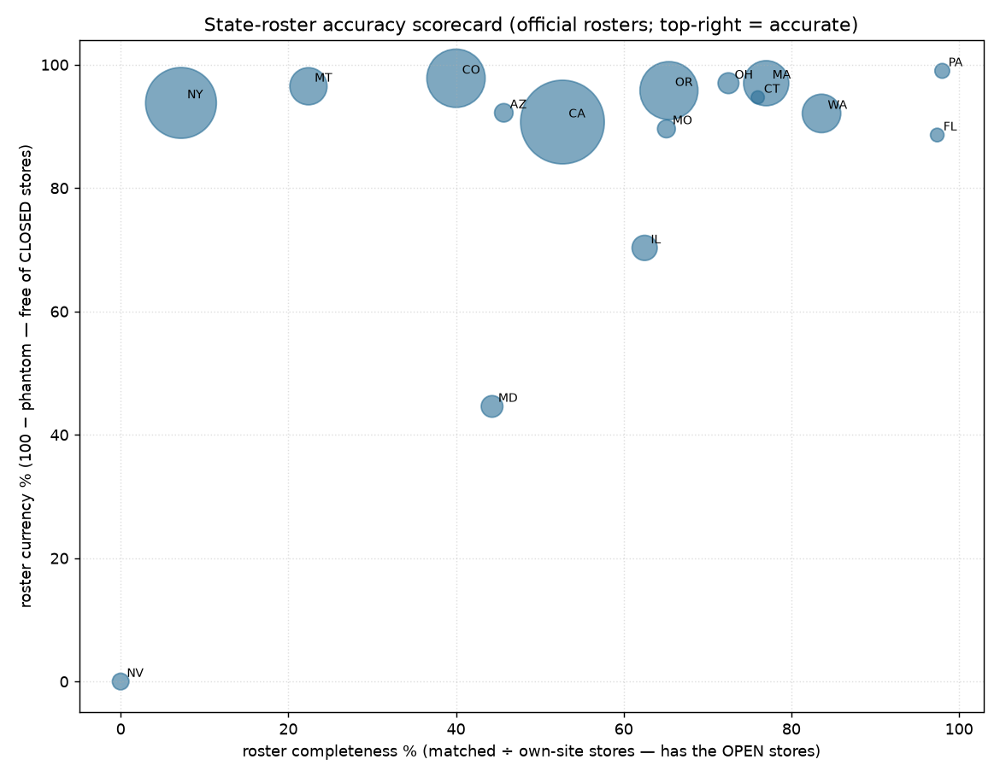

Descriptive findings on market structure, access, and pricing, built from public dispensary rosters
and live menus. Figures are as-published label/menu values (not lab assays or transactions) —
they characterize the market at scale, not clinical effect.
Rural vs urban. By USDA RUCA class: no meaningful rural price penalty, but rural
menus carry ~35% fewer distinct products — the gap is in selection, not price.

Cross-border prices. Distance to the nearest stricter-law state border barely
moves listed $/g once each store is compared to its own state — a null.

Cannabis deserts. ~17.6M people live >30 mi from any licensed store; visible
cross-border corridors toward prohibition neighbours.

Density & disadvantage. Dispensaries per capita rise with county social
vulnerability (~1.7× across the quartile extremes).

Price dispersion. A ~2.3× gap in eighth $/g across states — the law of one price
fails hard across markets.

The 20% tell. Labeled flower THC bunches just above the 20% marketing threshold in
23 of 25 markets — a label-inflation fingerprint.

Potency by form. Over-labeling lives in flower & pre-rolls; concentrate and
vape labels don't show the same threshold-bunching.

Platform share. Dutchie powers ~half of menu-bearing stores; aggregators make up
the independent tail.

Roster accuracy. State license lists vs operators' own store pages — where each
state's roster lags (closures still listed, stores missing).
Note. Association, not causation — where a store locates is not random. All
potency/price values are as-published labels; label inflation is itself one of the findings.